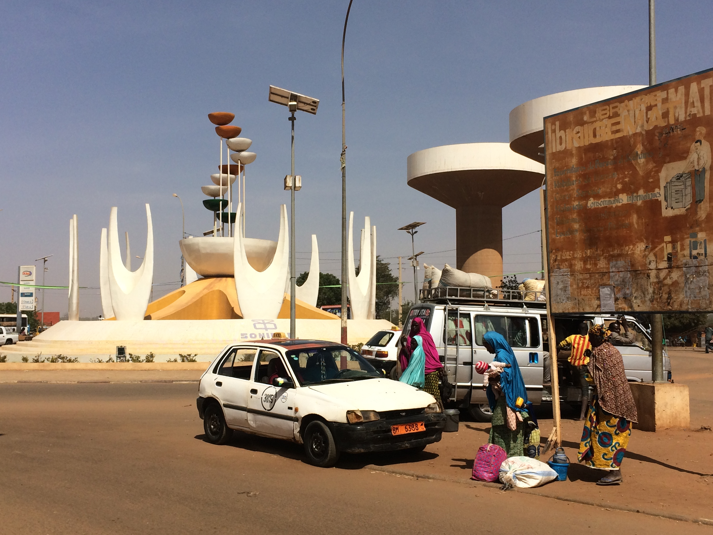
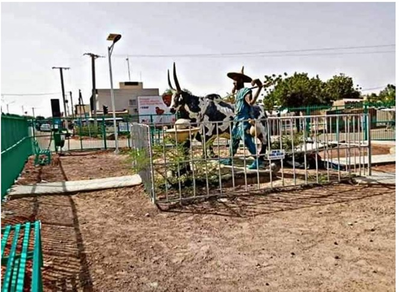
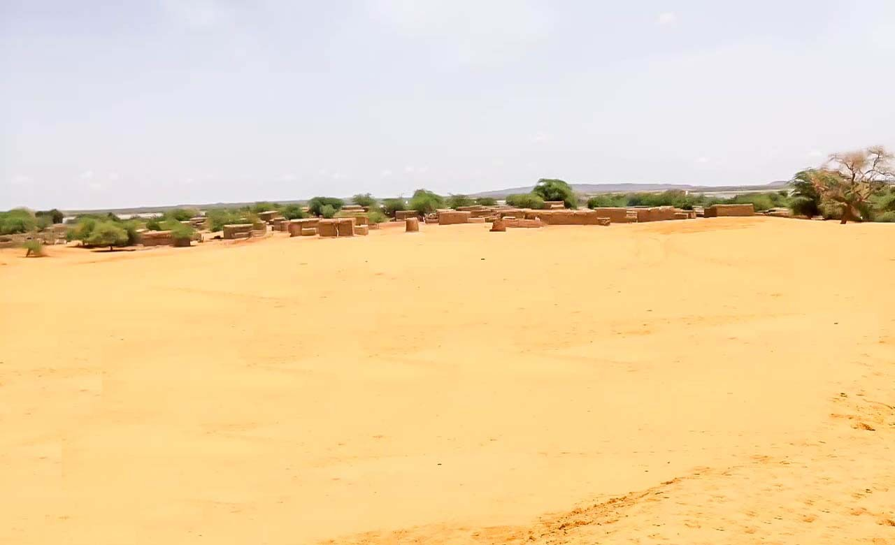
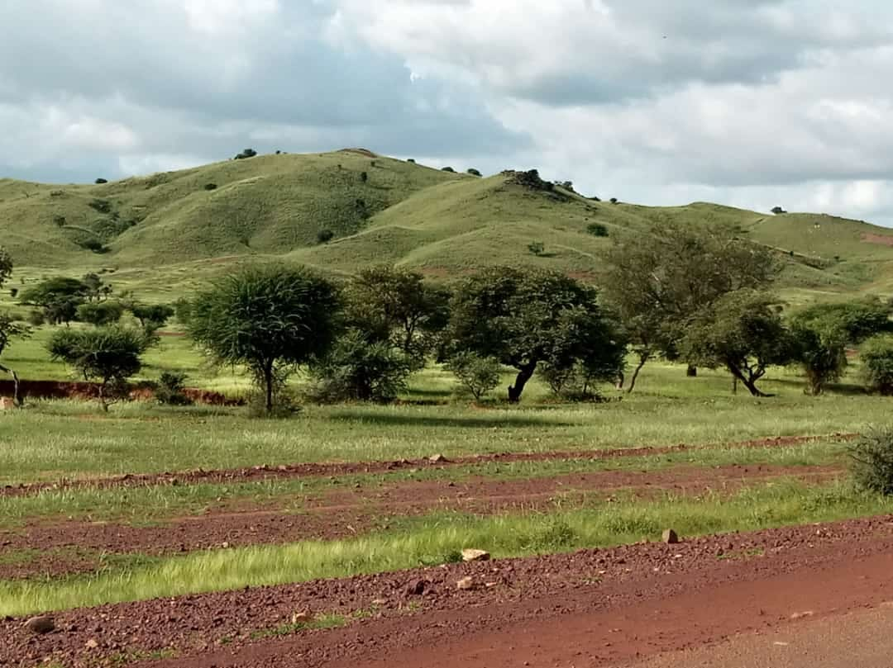
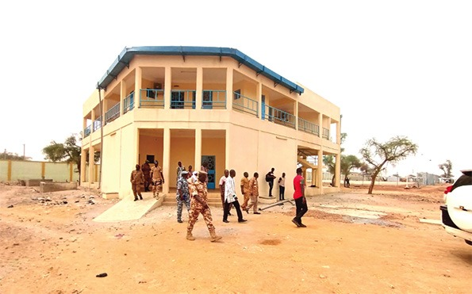

« Lacs, savanes et traditions Gulmanceba »
Pays : Burkina Faso
Région : Est
Province : Gnagna
Département : Bogandé
Chef-lieu : Bogandé
Gentilé : Bogandais
Population (2006) : 14 929 hab.
Langues : français, gulmancema
Coordonnées : 12°58'42"N, 0°08'38"O
Superficie : ~15 000 km² (région)
Fuseau horaire : UTC+0
Indicatif téléphonique : +226

Présentation
Située au nord-est du Burkina Faso, la région du Liptako demeure une terre fière et discrète, riche d’une histoire pluriséculaire, d’un patrimoine culturel dense et d’un potentiel artistique et touristique encore largement sous-exploité. Issue d’un nom fulfulde signifiant « on ne peut pas terrasser », cette zone symbolise la résilience et l’identité profonde de ses populations.
Le Liptako, désormais région à part entière et frontalière du Niger et du Mali, tire son nom de l’expression peule « Liba ta-a-ko », qui signifie littéralement « on ne peut pas terrasser ». Ce nom évoque la ténacité de ses habitants et leur attachement indéfectible à leur territoire. Malgré les défis climatiques et sécuritaires, la région conserve un fort ancrage culturel, une dynamique artistique singulière et des atouts touristiques à valoriser. Une mosaïque de peuples et de traditions
Avec le nouveau découpage administratif de juillet 2025, le Burkina Faso a porté à 17 le nombre de ses régions. À cette occasion, une région du Liptako a officiellement été créée, regroupant désormais trois provinces : Séno (chef-lieu : Dori), Yagha (chef-lieu : Sebba) et Oudalan (chef-lieu : Gorom-Gorom). Cette réforme consacre ainsi une reconnaissance institutionnelle à un territoire riche mais souvent marginalisé
Le Liptako est peuplé principalement de Peuls, mais également de Gourmantchés, Songhaïs, Bellas et Mossis. Cette diversité ethnique donne naissance à un riche tissu de coutumes, de langues et de pratiques sociales. Chez les Peuls, par exemple, le pulaaku, un code de vie fondé sur la retenue, la générosité et la fierté, régit les comportements. Les célébrations communautaires sont des moments d’expression culturelle intense. À l’occasion des mariages, des naissances ou des funérailles, les chants peuls résonnent, portés par des instruments traditionnels comme le hoddu ou le tam-tam. Ces moments sont aussi des temps de transmission orale où sagesse, proverbes et récits fondateurs s’échangent entre générations

Une expression artistique enracinée dans le quotidien L’art dans le Liptako est intimement lié à la vie quotidienne et à l’environnement. L’artisanat local y occupe une place centrale : forge, poterie, tissage, maroquinerie, vannerie sont autant de savoir-faire transmis de génération en génération. Les marchés de Dori ou de Gorom-Gorom regorgent d’objets faits main, reflets de l’âme locale. Les danses traditionnelles, les masques rituels des Gourmantchés et les chants lyriques des bergers peuls témoignent de la vivacité de l’expression artistique régionale. Ces formes d’art, bien que parfois méconnues, participent pleinement à la richesse culturelle nationale.
Un territoire au charme touristique indéniable Le potentiel touristique du Liptako est indiscutable. La ville de Dori, avec ses habitations en banco, son marché hebdomadaire et son passé de carrefour commercial sahélien, est une porte d’entrée historique sur la région. Les visiteurs y découvrent une ambiance authentique, des visages souriants et des traditions vivantes.

Plus à l’est, Gorom-Gorom offre un spectacle de diversité chaque jeudi, lors de son marché hebdomadaire. C’est un lieu emblématique où Touaregs, Peuls, Songhaïs et Bellas viennent échanger biens et nouvelles. On y trouve des bijoux touaregs, objets en cuir, poteries fines et étoffes teintes à l’indigo. Le Liptako offre aussi des paysages typiquement sahéliens : dunes, plaines couvertes d’acacias, mares saisonnières et formations rocheuses étonnantes. Ces panoramas se prêtent parfaitement à un écotourisme de découverte, à des circuits de randonnée ou à la photographie de paysage et de faune pastorale
Des efforts à renforcer pour un tourisme culturel durable Bien que doté de richesses culturelles et naturelles, le Liptako est longtemps resté marginalisé dans les grandes politiques touristiques nationales. Les défis sont nombreux : sécurité, infrastructures limitées, manque de promotion ciblée. Pourtant, la création récente de la région administrative du Liptako constitue un signal politique fort en faveur d’une meilleure structuration du territoire. Des initiatives citoyennes émergent : festivals culturels à échelle locale, valorisation des pratiques artisanales, implication de la diaspora dans des projets de préservation patrimoniale. Des ONG et structures culturelles accompagnent également des jeunes dans la documentation du patrimoine immatériel, la revitalisation de l’artisanat ou la création d’activités autour du tourisme responsable.

Tourisme & Culture
Ressources naturelles
Potentiel agricole 🌾
Potentiel éducatif 🏫

Potentiel commercial 🛒
Artisanat traditionnel
Spécialités culinaires
Galerie photos
Carte de situation
Provinces
Le saviez-vous ?
Le barrage de Kompienga, construit en 1988, est le plus grand du Burkina Faso. Son lac artificiel s'étend sur plus de 200 km² et produit chaque année plus de 10 000 tonnes de poisson, approvisionnant tout le pays.